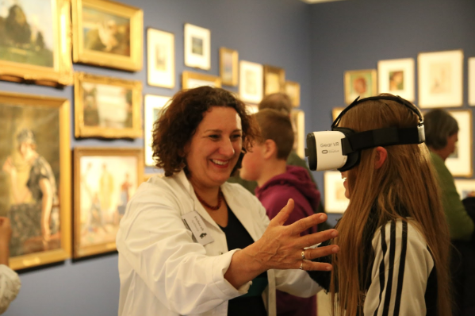

Dr. Deborah Apthorp
by Deborah Apthorp, 10 Apr 2019
 If you live in rural or regional Australia and you have Parkinson’s disease, you almost certainly have very limited access to specialised health care. Parkinson’s is the second most common neurological disorder in Australia, affecting over 80,000 Australians; 32 Australians are diagnosed every day, and the disease is more common in rural areas. Currently, diagnosis is very inexact and requires the expertise of a trained neurologist; one of my main research aims is to discover new measures which can be implemented in smartphones and other simple technologies, which could help make diagnosis and disease tracking both more accurate and more accessible.
I completed my PhD at the University of Sydney in 2011, as a mature-aged student; my first career was in music. My PhD topic was in basic human visual perception, I was interested in how we see motion in the world. I then moved on to a postdoc with Dr Stephen Palmisano at the University of Wollongong, where we looked at self-motion perception. This research included learning to collect data using a force plate, which sparked my interest in postural sway.
In 2013 I was awarded an NHMRC Early Career Fellowship and moved to the Australian National University, where I began using EEG to investigate brain processes involved in attention. It was here that a PhD student, Lauren Turner, sparked my interest in using postural sway to investigate neurological dysfunction, and this has been a focus of my research ever since.
During my career I have been fortunate to be the recipient of several awards, including the Macquarie University Medal, the Macquarie University Science Prize, the Tempe Mann Travelling Fellowship, the Campbell Perry Travelling Fellowship, the ANU Vice Chancellor’s Early Career Travel Award, and the ANU University House Early Career Fellowship. In addition, as well as the NHMRC Early Career Fellowship, I have received funding from the Perpetual Impact Philanthropy Foundation (2016 and 2018), the ACT Health Private Practice Fund, the ANU Major Equipment Grant Scheme, and am a member of the inaugural winning team of ANU’s $5 million Grand Challenges Scheme, ‘Our Health In Our Hands’. In 2018 I moved to the University of New England as a Lecturer in Psychology.
I am passionate about advocating for the role of regional universities in improving research opportunities and health outcomes for rural and regional communities.